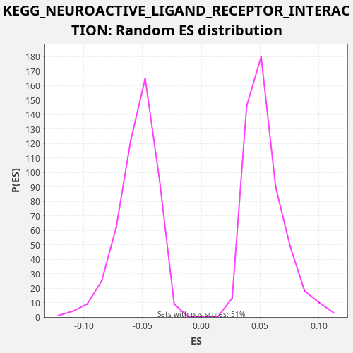

Profile of the Running ES Score & Positions of GeneSet Members on the Rank Ordered List
The same image in compressed SVG format
| Dataset | TCGA |
| Phenotype | NoPhenotypeAvailable |
| Upregulated in class | na_neg |
| GeneSet | KEGG_NEUROACTIVE_LIGAND_RECEPTOR_INTERACTION |
| Enrichment Score (ES) | -0.21842746 |
| Normalized Enrichment Score (NES) | -3.9954948 |
| Nominal p-value | 0.0 |
| FDR q-value | 0.0 |
| FWER p-Value | 0.0 |
| SYMBOL | RANK IN GENE LIST | RANK METRIC SCORE | RUNNING ES | CORE ENRICHMENT | |
|---|---|---|---|---|---|
| 1 | GIPR | 93 | 7.355 | -0.0009 | No |
| 2 | GABBR1 | 94 | 7.355 | 0.0032 | No |
| 3 | HTR7 | 228 | 4.369 | 0.0001 | No |
| 4 | TSPO | 352 | 3.353 | -0.0025 | No |
| 5 | THRB | 840 | 1.628 | -0.0246 | No |
| 6 | GRM4 | 921 | 1.495 | -0.0248 | No |
| 7 | P2RX6 | 1160 | 1.131 | -0.0336 | No |
| 8 | ADORA2B | 1391 | 0.892 | -0.0419 | No |
| 9 | LPAR2 | 1776 | 0.637 | -0.0585 | No |
| 10 | MCHR1 | 2389 | 0.392 | -0.0873 | No |
| 11 | GRIK3 | 2760 | 0.282 | -0.1032 | No |
| 12 | F2RL1 | 2859 | 0.259 | -0.1044 | No |
| 13 | CRHR2 | 3076 | 0.221 | -0.1119 | No |
| 14 | NPY1R | 3225 | 0.197 | -0.1158 | No |
| 15 | HTR2C | 3651 | 0.137 | -0.1346 | No |
| 16 | CHRNB4 | 3782 | 0.122 | -0.1375 | No |
| 17 | GNRHR | 3798 | 0.121 | -0.1342 | No |
| 18 | P2RY4 | 4049 | 0.097 | -0.1436 | No |
| 19 | LPAR1 | 4125 | 0.092 | -0.1436 | No |
| 20 | LEP | 4189 | 0.087 | -0.1429 | No |
| 21 | HTR1B | 4242 | 0.083 | -0.1416 | No |
| 22 | DRD5 | 4253 | 0.082 | -0.1381 | No |
| 23 | NPY5R | 4329 | 0.077 | -0.1380 | No |
| 24 | LPAR6 | 4959 | 0.039 | -0.1678 | No |
| 25 | S1PR4 | 5038 | 0.036 | -0.1679 | No |
| 26 | VIPR1 | 5042 | 0.036 | -0.1640 | No |
| 27 | LEPR | 5284 | 0.027 | -0.1729 | No |
| 28 | PTAFR | 5311 | 0.026 | -0.1702 | No |
| 29 | DRD1 | 5323 | 0.025 | -0.1667 | No |
| 30 | GABRE | 5685 | 0.016 | -0.1821 | No |
| 31 | SSTR5 | 5717 | 0.015 | -0.1797 | No |
| 32 | PTH2R | 5843 | 0.013 | -0.1823 | No |
| 33 | P2RY1 | 5901 | 0.011 | -0.1813 | No |
| 34 | CHRNA4 | 6006 | 0.010 | -0.1828 | No |
| 35 | AVPR1B | 6111 | 0.008 | -0.1843 | No |
| 36 | GH2 | 6249 | 0.007 | -0.1876 | No |
| 37 | PRSS1 | 6300 | 0.006 | -0.1862 | No |
| 38 | NMUR2 | 6437 | 0.005 | -0.1895 | No |
| 39 | MTNR1B | 6514 | 0.004 | -0.1895 | No |
| 40 | KISS1R | 6535 | 0.004 | -0.1865 | No |
| 41 | GABRG2 | 6584 | 0.003 | -0.1850 | No |
| 42 | OPRM1 | 6699 | 0.002 | -0.1870 | No |
| 43 | LTB4R2 | 6809 | 0.002 | -0.1888 | No |
| 44 | S1PR5 | 6810 | 0.002 | -0.1848 | No |
| 45 | GRIA2 | 6860 | 0.001 | -0.1833 | No |
| 46 | P2RX2 | 6958 | 0.001 | -0.1845 | No |
| 47 | GRM7 | 7142 | 0.000 | -0.1902 | No |
| 48 | MC1R | 7345 | 0.000 | -0.1970 | No |
| 49 | ADRB1 | 7357 | 0.000 | -0.1935 | No |
| 50 | GRIA3 | 7377 | 0.000 | -0.1905 | No |
| 51 | GABRR1 | 7425 | -0.000 | -0.1889 | No |
| 52 | HRH4 | 7445 | -0.000 | -0.1859 | No |
| 53 | PLG | 7512 | -0.000 | -0.1853 | No |
| 54 | CHRNA10 | 7515 | -0.000 | -0.1814 | No |
| 55 | NPY4R | 7714 | -0.000 | -0.1879 | No |
| 56 | HTR4 | 7843 | -0.001 | -0.1907 | No |
| 57 | CTSG | 7850 | -0.001 | -0.1870 | No |
| 58 | LPAR3 | 8014 | -0.002 | -0.1917 | No |
| 59 | GALR3 | 8199 | -0.003 | -0.1975 | No |
| 60 | CHRNA5 | 8343 | -0.004 | -0.2011 | No |
| 61 | P2RY11 | 8383 | -0.004 | -0.1991 | No |
| 62 | LHB | 8641 | -0.008 | -0.2089 | No |
| 63 | TAAR1 | 8721 | -0.009 | -0.2091 | No |
| 64 | MC5R | 8807 | -0.010 | -0.2096 | No |
| 65 | GABRB3 | 8819 | -0.010 | -0.2061 | No |
| 66 | GABRD | 8949 | -0.012 | -0.2089 | No |
| 67 | GRIK2 | 9074 | -0.014 | -0.2115 | No |
| 68 | GABRG1 | 9203 | -0.017 | -0.2143 | Yes |
| 69 | GRIN3B | 9211 | -0.017 | -0.2106 | Yes |
| 70 | GRIN2D | 9228 | -0.017 | -0.2074 | Yes |
| 71 | CCKAR | 9360 | -0.021 | -0.2104 | Yes |
| 72 | TACR3 | 9365 | -0.021 | -0.2065 | Yes |
| 73 | MLNR | 9440 | -0.023 | -0.2064 | Yes |
| 74 | P2RX3 | 9493 | -0.024 | -0.2051 | Yes |
| 75 | LTB4R | 9740 | -0.030 | -0.2143 | Yes |
| 76 | NMBR | 9760 | -0.031 | -0.2113 | Yes |
| 77 | GALR2 | 9781 | -0.032 | -0.2082 | Yes |
| 78 | NTSR2 | 9860 | -0.034 | -0.2084 | Yes |
| 79 | RXFP1 | 9908 | -0.036 | -0.2068 | Yes |
| 80 | OPRL1 | 9942 | -0.037 | -0.2045 | Yes |
| 81 | GALR1 | 9986 | -0.039 | -0.2027 | Yes |
| 82 | GRID2 | 10025 | -0.040 | -0.2007 | Yes |
| 83 | GABRR2 | 10069 | -0.042 | -0.1989 | Yes |
| 84 | P2RY2 | 10097 | -0.043 | -0.1963 | Yes |
| 85 | TRPV1 | 10195 | -0.047 | -0.1975 | Yes |
| 86 | GABRA1 | 10231 | -0.049 | -0.1953 | Yes |
| 87 | GABRA5 | 10323 | -0.052 | -0.1961 | Yes |
| 88 | GABRA4 | 10446 | -0.059 | -0.1986 | Yes |
| 89 | MTNR1A | 10464 | -0.060 | -0.1954 | Yes |
| 90 | NR3C1 | 10534 | -0.063 | -0.1950 | Yes |
| 91 | GLP1R | 10678 | -0.072 | -0.1986 | Yes |
| 92 | GLP2R | 10679 | -0.072 | -0.1946 | Yes |
| 93 | MC4R | 10686 | -0.072 | -0.1908 | Yes |
| 94 | MCHR2 | 10819 | -0.079 | -0.1938 | Yes |
| 95 | LHCGR | 10839 | -0.081 | -0.1908 | Yes |
| 96 | GABRQ | 10844 | -0.081 | -0.1869 | Yes |
| 97 | CHRNG | 10846 | -0.082 | -0.1829 | Yes |
| 98 | GABRA2 | 10880 | -0.084 | -0.1806 | Yes |
| 99 | PRSS3 | 10901 | -0.085 | -0.1776 | Yes |
| 100 | HCRTR1 | 10942 | -0.088 | -0.1756 | Yes |
| 101 | ADRA2C | 10985 | -0.091 | -0.1738 | Yes |
| 102 | ADCYAP1R1 | 11031 | -0.093 | -0.1722 | Yes |
| 103 | GABRB1 | 11095 | -0.097 | -0.1715 | Yes |
| 104 | CYSLTR2 | 11168 | -0.103 | -0.1713 | Yes |
| 105 | ADRB2 | 11193 | -0.105 | -0.1685 | Yes |
| 106 | HTR2B | 11222 | -0.106 | -0.1659 | Yes |
| 107 | GPR50 | 11253 | -0.108 | -0.1634 | Yes |
| 108 | GH1 | 11285 | -0.110 | -0.1610 | Yes |
| 109 | GABRA3 | 11344 | -0.114 | -0.1601 | Yes |
| 110 | GABRG3 | 11355 | -0.115 | -0.1565 | Yes |
| 111 | GRIN1 | 11446 | -0.123 | -0.1573 | Yes |
| 112 | HCRTR2 | 11454 | -0.124 | -0.1536 | Yes |
| 113 | CHRM3 | 11477 | -0.126 | -0.1507 | Yes |
| 114 | AVPR1A | 11505 | -0.129 | -0.1481 | Yes |
| 115 | TACR1 | 11673 | -0.144 | -0.1530 | Yes |
| 116 | MC2R | 11733 | -0.150 | -0.1521 | Yes |
| 117 | CHRM1 | 11825 | -0.160 | -0.1529 | Yes |
| 118 | ADORA2A | 11839 | -0.162 | -0.1495 | Yes |
| 119 | CALCR | 11913 | -0.171 | -0.1493 | Yes |
| 120 | EDNRB | 11965 | -0.176 | -0.1480 | Yes |
| 121 | GLRB | 12102 | -0.194 | -0.1513 | Yes |
| 122 | GLRA3 | 12116 | -0.195 | -0.1479 | Yes |
| 123 | NPFFR1 | 12120 | -0.196 | -0.1440 | Yes |
| 124 | GLRA2 | 12241 | -0.212 | -0.1463 | Yes |
| 125 | NTSR1 | 12250 | -0.213 | -0.1427 | Yes |
| 126 | PTGER1 | 12255 | -0.214 | -0.1388 | Yes |
| 127 | CHRNA3 | 12271 | -0.216 | -0.1355 | Yes |
| 128 | ADORA3 | 12301 | -0.220 | -0.1330 | Yes |
| 129 | GHRHR | 12331 | -0.224 | -0.1305 | Yes |
| 130 | UTS2R | 12444 | -0.241 | -0.1324 | Yes |
| 131 | HTR6 | 12567 | -0.263 | -0.1349 | Yes |
| 132 | HTR1E | 12653 | -0.277 | -0.1354 | Yes |
| 133 | AGTR2 | 12830 | -0.312 | -0.1408 | Yes |
| 134 | PTGER4 | 12911 | -0.327 | -0.1410 | Yes |
| 135 | CHRM5 | 13059 | -0.363 | -0.1449 | Yes |
| 136 | CNR1 | 13068 | -0.364 | -0.1412 | Yes |
| 137 | BRS3 | 13079 | -0.365 | -0.1377 | Yes |
| 138 | ADRA1D | 13124 | -0.376 | -0.1360 | Yes |
| 139 | CYSLTR1 | 13155 | -0.381 | -0.1335 | Yes |
| 140 | AVPR2 | 13251 | -0.403 | -0.1345 | Yes |
| 141 | CHRNA2 | 13257 | -0.404 | -0.1307 | Yes |
| 142 | GRIN2B | 13276 | -0.408 | -0.1276 | Yes |
| 143 | ADRA1A | 13330 | -0.419 | -0.1264 | Yes |
| 144 | HRH2 | 13509 | -0.465 | -0.1319 | Yes |
| 145 | GRID1 | 13526 | -0.472 | -0.1287 | Yes |
| 146 | HRH1 | 13665 | -0.514 | -0.1320 | Yes |
| 147 | CHRNB2 | 13775 | -0.551 | -0.1338 | Yes |
| 148 | GRIN2A | 13867 | -0.581 | -0.1346 | Yes |
| 149 | CCKBR | 14075 | -0.663 | -0.1417 | Yes |
| 150 | ADRB3 | 14113 | -0.679 | -0.1396 | Yes |
| 151 | PARD3 | 14299 | -0.773 | -0.1455 | Yes |
| 152 | GRIK4 | 14337 | -0.791 | -0.1434 | Yes |
| 153 | CALCRL | 14481 | -0.864 | -0.1470 | Yes |
| 154 | GPR35 | 14543 | -0.897 | -0.1462 | Yes |
| 155 | GHR | 14547 | -0.901 | -0.1423 | Yes |
| 156 | GRIA4 | 14582 | -0.923 | -0.1400 | Yes |
| 157 | CHRNA7 | 14588 | -0.924 | -0.1362 | Yes |
| 158 | VIPR2 | 14694 | -0.982 | -0.1378 | Yes |
| 159 | GRPR | 14756 | -1.030 | -0.1370 | Yes |
| 160 | GRM1 | 14761 | -1.032 | -0.1331 | Yes |
| 161 | BDKRB1 | 14917 | -1.125 | -0.1374 | Yes |
| 162 | GRM6 | 14955 | -1.152 | -0.1353 | Yes |
| 163 | NPFFR2 | 15148 | -1.294 | -0.1416 | Yes |
| 164 | P2RX5 | 15199 | -1.329 | -0.1402 | Yes |
| 165 | ADORA1 | 15335 | -1.464 | -0.1434 | Yes |
| 166 | GABRB2 | 15395 | -1.521 | -0.1425 | Yes |
| 167 | CRHR1 | 15412 | -1.540 | -0.1392 | Yes |
| 168 | S1PR3 | 15442 | -1.568 | -0.1367 | Yes |
| 169 | AGTR1 | 15468 | -1.596 | -0.1340 | Yes |
| 170 | TACR2 | 15474 | -1.602 | -0.1302 | Yes |
| 171 | DRD4 | 15485 | -1.615 | -0.1266 | Yes |
| 172 | ADRA2B | 15500 | -1.629 | -0.1233 | Yes |
| 173 | THRA | 15523 | -1.651 | -0.1204 | Yes |
| 174 | PRL | 15532 | -1.664 | -0.1167 | Yes |
| 175 | SSTR1 | 15565 | -1.697 | -0.1144 | Yes |
| 176 | HRH3 | 15616 | -1.753 | -0.1130 | Yes |
| 177 | LPAR4 | 15661 | -1.798 | -0.1113 | Yes |
| 178 | P2RX1 | 15700 | -1.850 | -0.1093 | Yes |
| 179 | F2RL3 | 15721 | -1.872 | -0.1062 | Yes |
| 180 | GRM2 | 15932 | -2.153 | -0.1135 | Yes |
| 181 | BDKRB2 | 15945 | -2.172 | -0.1100 | Yes |
| 182 | PTGER2 | 15951 | -2.181 | -0.1062 | Yes |
| 183 | GRIK1 | 15956 | -2.185 | -0.1024 | Yes |
| 184 | NPBWR1 | 16027 | -2.286 | -0.1020 | Yes |
| 185 | ADRA2A | 16048 | -2.306 | -0.0990 | Yes |
| 186 | S1PR1 | 16056 | -2.320 | -0.0953 | Yes |
| 187 | CHRNE | 16111 | -2.413 | -0.0942 | Yes |
| 188 | P2RX4 | 16117 | -2.423 | -0.0903 | Yes |
| 189 | GCGR | 16147 | -2.473 | -0.0878 | Yes |
| 190 | NMUR1 | 16176 | -2.518 | -0.0853 | Yes |
| 191 | PTH1R | 16185 | -2.534 | -0.0816 | Yes |
| 192 | HTR2A | 16399 | -2.938 | -0.0890 | Yes |
| 193 | CHRNB1 | 16414 | -2.972 | -0.0857 | Yes |
| 194 | PRLR | 16451 | -3.046 | -0.0835 | Yes |
| 195 | F2 | 16452 | -3.049 | -0.0794 | Yes |
| 196 | TBXA2R | 16532 | -3.194 | -0.0796 | Yes |
| 197 | SCTR | 16539 | -3.213 | -0.0759 | Yes |
| 198 | PTGFR | 16558 | -3.254 | -0.0727 | Yes |
| 199 | ADRA1B | 16648 | -3.444 | -0.0734 | Yes |
| 200 | CNR2 | 16650 | -3.444 | -0.0694 | Yes |
| 201 | GPR156 | 16661 | -3.461 | -0.0659 | Yes |
| 202 | GRM5 | 16689 | -3.527 | -0.0633 | Yes |
| 203 | GRIN2C | 16740 | -3.695 | -0.0619 | Yes |
| 204 | SSTR3 | 16750 | -3.723 | -0.0583 | Yes |
| 205 | PTGIR | 16869 | -3.970 | -0.0605 | Yes |
| 206 | S1PR2 | 16890 | -4.040 | -0.0575 | Yes |
| 207 | P2RY14 | 16894 | -4.045 | -0.0536 | Yes |
| 208 | P2RY8 | 16941 | -4.168 | -0.0520 | Yes |
| 209 | GRIN3A | 16959 | -4.228 | -0.0488 | Yes |
| 210 | APLNR | 17052 | -4.494 | -0.0497 | Yes |
| 211 | GRM3 | 17155 | -4.843 | -0.0511 | Yes |
| 212 | HTR1D | 17163 | -4.877 | -0.0474 | Yes |
| 213 | FPR1 | 17198 | -5.029 | -0.0452 | Yes |
| 214 | CHRNA9 | 17261 | -5.268 | -0.0444 | Yes |
| 215 | FPR2 | 17265 | -5.296 | -0.0405 | Yes |
| 216 | HTR1F | 17477 | -6.201 | -0.0478 | Yes |
| 217 | FPR3 | 17480 | -6.209 | -0.0438 | Yes |
| 218 | EDNRA | 17481 | -6.214 | -0.0397 | Yes |
| 219 | P2RY13 | 17482 | -6.216 | -0.0356 | Yes |
| 220 | PTGER3 | 17579 | -6.666 | -0.0367 | Yes |
| 221 | CHRM2 | 17668 | -7.081 | -0.0374 | Yes |
| 222 | GRIA1 | 17698 | -7.204 | -0.0349 | Yes |
| 223 | DRD2 | 17736 | -7.468 | -0.0328 | Yes |
| 224 | OPRK1 | 17757 | -7.623 | -0.0298 | Yes |
| 225 | P2RY6 | 17782 | -7.755 | -0.0270 | Yes |
| 226 | C3AR1 | 17884 | -8.342 | -0.0283 | Yes |
| 227 | GRM8 | 17912 | -8.498 | -0.0257 | Yes |
| 228 | PTGDR | 17922 | -8.575 | -0.0221 | Yes |
| 229 | F2R | 17952 | -8.793 | -0.0196 | Yes |
| 230 | P2RY10 | 18024 | -9.375 | -0.0193 | Yes |
| 231 | GZMA | 18120 | -10.263 | -0.0204 | Yes |
| 232 | SSTR2 | 18258 | -11.665 | -0.0237 | Yes |
| 233 | C5AR1 | 18271 | -11.820 | -0.0202 | Yes |
| 234 | OXTR | 18289 | -12.091 | -0.0171 | Yes |
| 235 | TSHR | 18366 | -13.360 | -0.0171 | Yes |
| 236 | GABRP | 18402 | -13.918 | -0.0149 | Yes |
| 237 | CHRNA1 | 18542 | -16.766 | -0.0183 | Yes |
| 238 | F2RL2 | 18587 | -18.457 | -0.0166 | Yes |
| 239 | GRIK5 | 18596 | -18.752 | -0.0129 | Yes |
| 240 | GABBR2 | 18617 | -19.553 | -0.0099 | Yes |
| 241 | CHRM4 | 18662 | -21.811 | -0.0082 | Yes |
| 242 | CHRNA6 | 18668 | -22.311 | -0.0044 | Yes |
| 243 | CGA | 18698 | -24.429 | -0.0019 | Yes |
| 244 | P2RX7 | 18699 | -24.546 | 0.0022 | Yes |
| 245 | GPR83 | 18769 | -35.042 | 0.0026 | Yes |

{kind=link}
{kind=link}